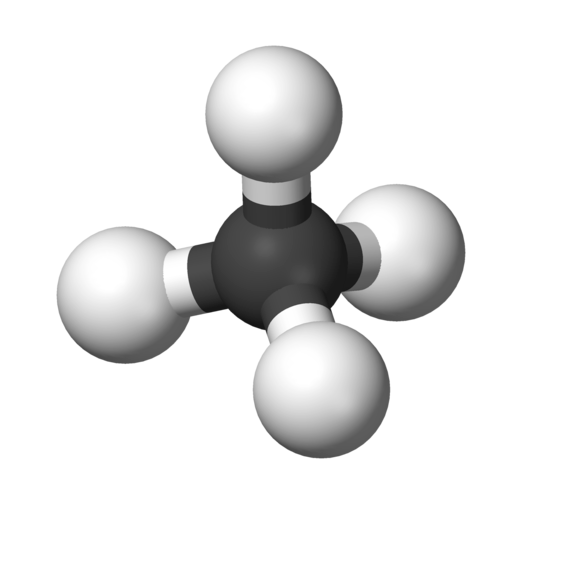

第六届蓝桥杯国赛解题报告
——林奕匡《冥王星》
最近身体状况不太好，导致干事的热情和效率不是很高，今天突然被告知周末就是蓝桥国赛了，惊地赶紧加班加点做做真题、复习一些知识。虽然今年的省赛让我感觉做往年真题的意义不大（难度不是一个等级的），但是做总比不做要好，就当是一个自我检查，同时严格要求自己不能套板子，必须能按照自己的理解独立写出来。
积分之谜
问题描述
小明开了个网上商店，卖风铃。共有3个品牌：A，B，C。
为了促销，每件商品都会返固定的积分。
小明开业第一天收到了三笔订单：
第一笔：3个A + 7个B + 1个C，共返积分：315
第二笔：4个A + 10个B + 1个C，共返积分：420
第三笔：A + B + C，共返积分….
你能算出第三笔订单需要返积分多少吗？
请提交该整数，不要填写任何多余的内容。
分析
这就是个很简单的三元一次方程组，已知两方程，求另一方程的问题。
设A返积分为$x$，B返积分为$y$，C返积分为$z$，由题意：
$$
\begin{cases}
3x+7y+z=315\\
4x+10y+z=420
\end{cases}\Rightarrow
x+3y=105\
$$
正好，待求式子：
$$
x+y+z=(4x+10y+z)-3(x+3y)=420-3*105=105
$$
发散
对于线性方程组，还需回顾高斯消元这一知识。可以参考Alex_McAvoy的博客《线性代数 —— 高斯消元法》
完美正方形
问题描述
如果一些边长互不相同的正方形，可以恰好拼出一个更大的正方形，则称其为完美正方形。
历史上，人们花了很久才找到了若干完美正方形。比如：如下边长的22个正方形
2 3 4 6 7 8 12 13 14 15 16 17 18 21 22 23 24 26 27 28 50 60

如【图1.png】那样组合，就是一种解法。此时，
紧贴上边沿的是：60 50
紧贴下边沿的是：26 28 17 21 18
22阶完美正方形一共有8种。下面的组合是另一种：
2 5 9 11 16 17 19 21 22 24 26 30 31 33 35 36 41 46 47 50 52 61
如果告诉你该方案紧贴着上边沿的是从左到右依次为：47 46 61，
你能计算出紧贴着下边沿的是哪几个正方形吗？
请提交紧贴着下边沿的正方形的边长，从左到右，用空格分开。
不要填写任何多余的内容或说明文字。
分析
开始时试图手玩，然后试着按这种思想操作了一下：
- 边长小的大概率在中间补空
- 直接挑边界，挑出来的边界应该满足左边和为107，右边和为83，下面的和为154
但是画了会，觉得这样无法确定是否是可行解，而且能够满足上述条件的构造方法也不唯一，就算我得到了下面一行的数，我还是需要判断是否可行，才能确定这几个数的顺序，遂放弃。
事实上对于填空题而言，能出结果是第一，算法运行效率是其次，只要不慢到出不了结果，最后填上去，都是一样的。那么我们不妨直接暴力解决。
如果从线段长度（区间来考虑）会很复杂，我们不妨简单点，就把整个图案看成点阵，这样的话，题目中给出的上边沿的正方形的边长是47 46 61这一条件，就可以被解读为我们要对一个154*154的正方形点阵做覆盖，其中上边沿已经覆盖了三个正方形。
由于最后所有点都会被覆盖，所以我们可以简单的考虑，对任意一个未覆盖的点搜索，依次尝试每一种覆盖情况，最终找到一组合法的解即可。写的时候，完全没必要为了效率而想一些高级方法，比如判断当前位置能不能放特定正方形，只需要两个for遍历检查一下就行了，最大程度减少代码量并避免出错——一旦出错，耗费的Debug时间可不是一会儿半会儿。
参考代码
//
// Created by Visors on 2020/11/10.
//
// 题目名：完美正方形
// 题目来源：第六届蓝桥杯国赛
// 题目链接：TODO
// 算法：WanMeiZhengFangXing.cpp
// 用途：TODO
// 时间复杂度：O(TODO)
//
#include <bits/stdc++.h>
using namespace std;
int G[154][154];
// 这里的顺序基于我的贪心思想，如果小的正方形放在前面，则搜索树前几层宽度会很大
vector<int> squares{22, 24, 26, 30, 31, 33, 35, 36, 41, 50, 52, 2, 5, 9, 11, 16, 17, 19, 21};
vector<bool> used; // 记录正方形是否被使用过
vector<int> ans; // 记录最后一行答案
bool getAns = false; // 是否找到解
bool checkFill(int x, int y, int len) {
// 填进去越界了，肯定不行
if (x + len > 154 || y + len > 154) return false;
// 填的正方形位置里有一个被填都不行
for (int i = 0; i < len; i++)
for (int j = 0; j < len; j++)
if (G[x + i][y + j]) return false;
return true;
}
void dfs(int x, int y) {
// cout << x << ' ' << y << endl;
if (getAns) return; // 找到答案立即停止搜索
for (int i = 0; i < squares.size(); i++) {
if (getAns) break; // 找到答案立即停止搜索
if (!used[i]) {
int &len = squares[i];
if (checkFill(x, y, len)) {
// 填上
used[i] = true;
for (int j = 0; j < len; j++)
for (int k = 0; k < len; k++)
G[x + j][y + k] = len;
// 如果填的最后一行是下沿，丢进ans
if (x + len == 154) ans.push_back(len);
// 找下一个填的起始位置（从上到下，从左到右）
// 直接暴力找，不用优化
bool completed = true, flag = false;
for (int j = 0; j < 154; j++) {
for (int k = 0; k < 154; k++)
if (!G[j][k]) {
dfs(j, k);
completed = false;
flag = true;
break; // 别忘了这个break只会跳出内层循环，用下面的flag处理下
}
if (flag) break;
}
if (completed) {
getAns = true;
break;
}
if (getAns) break;
// 回溯，撤回决策
used[i] = false;
for (int j = 0; j < len; j++)
for (int k = 0; k < len; k++)
G[x + j][y + k] = 0;
if (x + len == 154) ans.pop_back();
}
}
}
}
int main() {
// ios_base::sync_with_stdio(false);
// cin.tie(nullptr), cout.tie(nullptr);
freopen("ans.out", "w", stdout);
used.resize(squares.size());
for (int i = 0; i < 47; i++)
for (int j = 0; j < 47; j++)
G[i][j] = 47;
for (int i = 0; i < 46; i++)
for (int j = 47; j < 93; j++)
G[i][j] = 46;
for (int i = 0; i < 61; i++)
for (int j = 93; j < 154; j++)
G[i][j] = 61;
dfs(46, 47);
for (int it:ans) cout << it << ' ';
cout << endl;
for (int i = 0; i < 154; i++) {
for (int j = 0; j < 154; j++)
printf("%3d", G[i][j]);
printf("\n");
}
fclose(stdout);
return 0;
}
发散
上述代码中，我求得答案为“50 41 33 30”，我在网上看到另一篇博客中给出的答案是“50 33 30 41”，于是加了个文件输出看了一下，我的答案大约的确是对的，也就是说本题可能有多种合法答案。验证这句话有个简单的方法，就是改改我代码里squares中元素的顺序，而不用去严格证明，不过我就懒得去试了。
这里有高人Lonverce加了线段树优化的版本《( 题解 )第六届蓝桥杯决赛试题 – 完美正方形 (线段树 + 深搜)》
关联账户
问题描述
为增大反腐力度，某地警方专门支队，对若干银行账户展开调查。
如果两个账户间发生过转账，则认为有关联。如果a,b间有关联, b,c间有关联，则认为a,c间也有关联。
对于调查范围内的n个账户（编号0到n-1），警方已知道m条因转账引起的直接关联。
现在希望知道任意给定的两个账户，求出它们间是否有关联。有关联的输出1，没有关联输出0
小明给出了如下的解决方案：
#include <stdio.h>
#define N 100
int connected(int* m, int p, int q)
{
return m[p]==m[q]? 1 : 0;
}
void link(int* m, int p, int q)
{
int i;
if(connected(m,p,q)) return;
int pID = m[p];
int qID = m[q];
for(i=0; i<N; i++) _____________________________________; //填空位置
}
int main()
{
int m[N];
int i;
for(i=0; i<N; i++) m[i] = i; //初始状态，每个节点自成一个连通域
link(m,0,1); //添加两个账户间的转账关联
link(m,1,2);
link(m,3,4);
link(m,5,6);
link(m,6,7);
link(m,8,9);
link(m,3,7);
printf("%d ", connected(m,4,7));
printf("%d ", connected(m,4,5));
printf("%d ", connected(m,7,9));
printf("%d ", connected(m,9,2));
return 0;
}
请分析源代码，并提交划线部分缺少的代码。不要填写已有代码或任何多余内容。
分析
这个问题拿到手，当然一眼出并查集啦！不过出题人非要给你个思路，让你在上面做文章，那我们先分析下代码中例子的情况：
graph LR
0 --- 1
1 --- 2
3 --- 4
5 --- 6
6 --- 7
8 --- 9
3 --- 7
所以首先，我们把代码copy到本地，填完空后，我们输出的结果必须是“1 1 0 0”（填对了一定是这个答案，是这个答案不一定填对了）。
我们再分析下题目给出的算法，emmm这就是传说中的$O(n)$合并？？对于该算法，每次合并时将所有同集合元素的m更新为相同值，这样查询时只需要$O(1)$判断下两者m值是否相同即可。算法正确性可用归纳法证明。
按照上述意思，补全的代码应该是if (connected(m, pID, i) m[i] = qID
密文搜索
问题描述
福尔摩斯从X星收到一份资料，全部是小写字母组成。
他的助手提供了另一份资料：许多长度为8的密码列表。
福尔摩斯发现，这些密码是被打乱后隐藏在先前那份资料中的。
请你编写一个程序，从第一份资料中搜索可能隐藏密码的位置。要考虑密码的所有排列可能性。
数据格式
输入第一行：一个字符串s，全部由小写字母组成，长度小于1024*1024
紧接着一行是一个整数n,表示以下有n行密码，1<=n<=1000
紧接着是n行字符串，都是小写字母组成，长度都为8
要求输出
一个整数, 表示每行密码的所有排列在s中匹配次数的总和。
例如
用户输入：
aaaabbbbaabbcccc
2
aaaabbbb
abcabccc
则程序应该输出：
4
这是因为：第一个密码匹配了3次，第二个密码匹配了1次，一共4次。
资源约定
峰值内存消耗 < 512M
CPU消耗 < 3000ms
分析
讲实在话，这题看了半天没看懂意思，第一个密码怎么匹配了3次？“要考虑密码的所有排列可能性”是什么意思？可能语文不好不配打蓝桥= =
在网上看了下别人的代码，才知道原来意思是对于s中任意长度为8的子串，判断其排列后能得到给定密码的数目和（这tm……我直接迷惑）。
法一 Brute Force
我们可以枚举s中每一个长度为8的子串，然后统计串中各字符出现次数。对于任意密码，逐一检查密码中的字符个数与子串字符个数是否匹配，匹配答案就+1。这样的复杂度是$O(n*s.length)$，显然会T一些点。
因为BF很不优雅还不能把分拿满，这里就不写了。
法二 算术基本定理+Hash
根据算术基本定理，任何一个大于1的自然数都能被分为有限个质数之积（或者它本身就是质数），且这个分解是唯一的。
根据这一定理，我们很容易想到，如果让每个字母表示不同的质数，那么整个字符串就能被Hash为其质数积，这样的Hash方法是不会有冲突的，因为分解是唯一的，所以不会有两个不一样的串Hash值相同。
那么我们就设’a'‘b'‘c’等字符为前26个质数，然后对原串s中所有的长度为8的子串Hash后记录在map里。然后每度入一个密码，累加改Hash值出现的次数即可，算法复杂度为$O(s.length*\log(s.legnth)+nlog(s.length))$。子串长度只有8，所以Hash值也不会爆long long（第26个素数是101）。
参考代码
//
// Created by Visors on 2020/11/11.
//
// 题目名：密文搜索
// 题目来源：第六届蓝桥杯国赛
// 题目链接：https://www.dotcpp.com/oj/problem1828.html
// 算法：算术基本定理+Hash
// 用途：TODO
// 时间复杂度：$O(s.length*\log(s.legnth)+nlog(s.length))$
//
#include <bits/stdc++.h>
using namespace std;
vector<int> value{2, 3, 5, 7, 11, 13, 17, 19, 23, 29, 31, 37, 41,
43, 47, 53, 59, 61, 67, 71, 73, 79, 83, 89, 97, 101};
unordered_map<long long, int> book;
string s, t;
int n, ans = 0;
int main() {
ios_base::sync_with_stdio(false);
cin.tie(nullptr), cout.tie(nullptr);
cin >> s;
// 题目没有明说s长度范围，所以特判一下
if (s.length() >= 8) {
long long mul = 1;
for (int i = 0; i < 8; i++) mul *= value[s[i] - 'a'];
book[mul]++;
for (int i = 8; i < s.length(); i++) {
// 一除一乘，优化常数
mul /= value[s[i - 8] - 'a'];
mul *= value[s[i] - 'a'];
book[mul]++;
}
}
cin >> n;
while (n--) {
cin >> t;
if (s.length() < 8) continue;
long long mul = 1;
for (char c:t) mul *= value[c - 'a'];
ans += book[mul];
}
if (s.length() < 8) cout << "0\n";
else cout << ans << endl;
return 0;
}
吐槽
这个题面真的神了，“这些密码是被打乱后隐藏在先前那份资料中的”让我以为这题是对给出的所有密码找到最大不冲突匹配数。
然后这个乱序到底是取子串还是子序列，也没有说明白。我觉得既然都打乱了应该就是子序列吧，结果博客里面都是直接当作子串写的，莽一发直接过了。
可能是五年前蓝桥题目质量还不够好吧……
居民集会
题目描述
蓝桥村的居民都生活在一条公路的边上，公路的长度为L，每户家庭的位置都用这户家庭到公路的起点的距离来计算，第i户家庭距起点的距离为di。
每年，蓝桥村都要举行一次集会。今年，由于村里的人口太多，村委会决定要在4个地方举行集会，其中3个位于公路中间，1个位最公路的终点。
已知每户家庭都会向着远离公路起点的方向去参加集会，参加集会的路程开销为家庭内的人数ti与距离的乘积。
给定每户家庭的位置di和人数ti，请为村委会寻找最好的集会举办地：p1, p2, p3, p4 (p1<=p2<=p3<=p4=L),使得村内所有人的路程开销和最小。
输入格式
输入的第一行包含两个整数n, L，分别表示蓝桥村的家庭数和公路长度。
接下来n行，每行两个整数di, ti，分别表示第i户家庭距离公路起点的距离和家庭中的人数。
输出格式
输出一行，包含一个整数，表示村内所有人路程的开销和。
样例输入
6 10
1 3
2 2
4 5
5 20
6 5
8 7
样例输出
18
样例说明
在距起点2, 5, 8, 10这4个地方集会，6个家庭需要的走的距离分别为1, 0, 1, 0, 2, 0，总的路程开销为1*3+0*2+1*5+0*20+2*5+0*7=18。
数据规模与约定
对于10%的评测数据，1<=n<=300。
对于30%的评测数据，1<=n<=2000，1<=L<=10000，0<=di<=L，di<=di+1，0<=ti<=20。
对于100%的评测数据，1<=n<=100000，1<=L<=1000000，0<=di<=L，di<=di+1，0<=ti<=1000000。
资源约定
峰值内存消耗 < 512M
CPU消耗 < 5000ms
分析
显然，题目中的p1,p2,p3应在三个不同的家庭处，那么BF枚举三个点的位置再加上前缀和优化，就能$O(n^3)$求解，但这个复杂度太差了。
前缀和如何优化？如果你把居民从家走到集会点看成从家走到p4，再减去p4到其集会点的距离，则对于划分出的一个区间，其减去的值的和应为区间内的人数（前缀和处理）*l-集会点距起点的距离。
因着这个，我跟队友讨论了下，莽了个假算法：先枚举p2，然后在左右区间分别三分找p1和p2。交了一下WA了，似乎两遍区间内函数并不是单峰函数，这个算法有问题，不过可以过部分点。不过由于不是官方评测，可能数据有问题，毕竟过的人数只有个位数……
参考代码
//
// Created by Visors on 2020/11/11.
//
// 题目名：居民集会
// 题目来源：第六届蓝桥杯国赛
// 题目链接：https://www.dotcpp.com/oj/problem1829.html
// 算法：JuMinJiHui.cpp
// 用途：TODO
// 时间复杂度：O(TODO)
//
#include <bits/stdc++.h>
using namespace std;
typedef long long ll;
typedef pair<int, int> pii;
int n, l;
set<int> s;
vector<pii> families;
vector<ll> preSum;
int p1, p2, p3;
inline ll getPreSum(int left, int right) {
return preSum[right + 1] - preSum[left];
}
inline ll f1(int x) {
return getPreSum(0, x) * (l - families[x].first) + getPreSum(x + 1, p2) * (l - families[p2].first);
}
inline ll f2(int x) {
return getPreSum(p2 + 1, x) * (l - families[x].first);
}
int sanfen1(int left, int right) {
while (left < right - 1) {
int mid1 = (left + right) / 2,
mid2 = (mid1 + right) / 2;
if (f1(mid1) > f1(mid2)) right = mid2;
else left = mid1;
}
return f1(left) > f1(right) ? left : right;
}
int sanfen2(int left, int right) {
while (left < right - 1) {
int mid1 = (left + right) / 2,
mid2 = (mid1 + right) / 2;
if (f2(mid1) > f2(mid2)) right = mid2;
else left = mid1;
}
return f2(left) > f2(right) ? left : right;
}
int main() {
ios_base::sync_with_stdio(false);
cin.tie(nullptr), cout.tie(nullptr);
cin >> n >> l;
families.resize(n);
preSum.resize(n + 1);
for (pii &it:families) {
cin >> it.first >> it.second;
s.insert(it.first);
}
if (s.size() <= 3) {
cout << "0\n";
return 0;
}
sort(families.begin(), families.end());
preSum[0] = 0;
for (int i = 1; i <= n; i++)
preSum[i] = preSum[i - 1] + families[i - 1].second;
ll Sum = 0;
for (pii it:families) Sum += (l - it.first) * it.second;
ll ans = 0x3f3f3f3f3f3f3f3f;
for (int i = 1; i < n - 1; i++) {
p2 = i;
p1 = sanfen1(0, p2 - 1);
p3 = sanfen2(p2 + 1, n - 1);
ans = min(ans, Sum - f1(p1) - f2(p3));
}
cout << ans << endl;
return 0;
}
发散
更好的写法是DP，这个DP并不难想，不过不知道为什么当初讨论着讨论着就开始三分了，可能是因为我们都想把分拿满吧。经过前缀和优化后，DP可以$O(n^2)$出解，有大佬指出该DP可以斜率优化，不过我不懂……
模型染色
题目描述
在电影《超能陆战队》中，小宏可以使用他的微型机器人组合成各种各样的形状。
现在他用他的微型机器人拼成了一个大玩具给小朋友们玩。为了更加美观，他决定给玩具染色。
小宏的玩具由n个球型的端点和m段连接这些端点之间的边组成。下图给出了一个由5个球型端点和4条边组成的玩具，看上去很像一个分子的球棍模型。

由于小宏的微型机器人很灵活，这些球型端点可以在空间中任意移动，同时连接相邻两个球型端点的边可以任意的伸缩，这样一个玩具可以变换出不同的形状。在变换的过程中，边不会增加，也不会减少。
小宏想给他的玩具染上不超过k种颜色，这样玩具看上去会不一样。如果通过变换可以使得玩具变成完全相同的颜色模式，则认为是本质相同的染色。现在小宏想知道，可能有多少种本质不同的染色。
输入格式
输入的第一行包含三个整数n, m, k，
分别表示小宏的玩具上的端点数、边数和小宏可能使用的颜色数。端点从1到n编号。
接下来m行每行两个整数a, b，表示第a个端点和第b个端点之间有一条边。输入保证不会出现两条相同的边。
输出格式
输出一行，表示本质不同的染色的方案数。由于方案数可能很多，请输入方案数除10007的余数。
样例输入
3 2 2
1 2
3 2
样例输出
6
样例说明
令(a, b, c)表示第一个端点染成a，第二个端点染成b，第三个端点染成c，则下面6种本质不同的染色：(1, 1, 1), (1, 1, 2), (1, 2, 1), (1, 2, 2), (2, 1, 2), (2, 2, 2)。
而(2, 1, 1)与(1, 1, 2)是本质相同的，(2, 2, 1)与(2, 1, 2)是本质相同的。
数据规模与约定
对于20%的评测数据，1<=n<=5， 1<=k<=2。
对于50%的评测数据，1<=n<=10, 1<=k<=8。
对于100%的评测数据，1<=n<=10, 1<=m<=45, 1<=k<=30。
资源约定
峰值内存消耗 < 512M
CPU消耗 < 5000ms
分析
我只会暴力……大佬说用Polya定理，虽然以前接触过，不过已经忘干净了……
后记
这么看上去国赛大题想拿满分并不简单，不知道到时候同台竞技的人水平如何，突然有一点小虚。